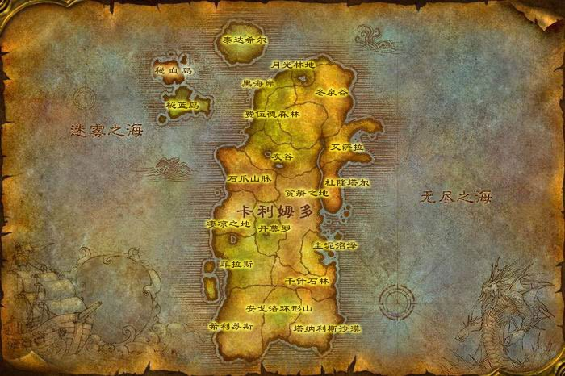

卡利姆多地图传送命令

杜隆塔尔
| 地点 | 位置 | 描述 | 传送命令 |
|---|---|---|---|
| 试炼谷 | / | 兽人和巨魔出生地 | .go -600.0 -4243.0 38.96 1 |
| 森金村 | / | 5-10级任务NPC营地 | .go -829.0 -4923.6 20.00 1 |
| 回音群岛 | / | 森金村东边的小岛 | .go -1067.4 -5341.5 1.33 1 |
| 剃刀岭 | / | 5-10级任务NPC营地 | .go 297.0 -4742.0 9.31 1 |
| 提拉加德城堡 | / | 剃刀岭东南方的城堡 | .go -233.5 -5035.3 21.16 1 |
莫高雷
| 地点 | 位置 | 描述 | 传送命令 |
|---|---|---|---|
| 纳拉其营地 | / | 牛头人出生地 | .go -2916.0 -261.0 53.34 1 |
| 刺刃峡谷 | / | 红云台地东边的野猪人峡谷 | .go -2947.8 -1247.6 70.30 1 |
| 血蹄村 | / | 5-10级任务NPC营地 | .go -2314.0 -371.0 -9.42 1 |
| 风险投资公司矿洞 | / | / | .go -1989.5 -1075.1 51.46 1 |
| 白鬃石 | / | / | .go -2415.5 188.7 48.35 1 |
| 赤色石 | / | 雷霆崖东边的野猪人营地 | .go -984.4 -1014.0 14.69 1 |
| 巴尔丹挖掘场 | / | / | .go -1864.5 235.7 55.46 1 |
贫瘠之地
| 地点 | 位置 | 描述 | 传送命令 |
|---|---|---|---|
| 十字路口 | 飞行管理员 | 贫瘠之地部落主要营地 | .go -441.0 -2598.0 96.10 1 |
| 棘齿城 | 码头 | 贫瘠之地中立地精城市 | .go -977.0 -3788.0 5.28 1 |
| 陶拉祖营地 | 飞行管理员 | 贫瘠之地部落次要营地 | .go -2380.0 -1882.0 95.85 1 |
| 勇士岛 | / | 战士狂暴姿态职业任务地点 | .go -1682.0 -4343.0 4.13 1 |
| 淤泥沼泽 | / | 北部风险投资公司营地 | .go 961.7 -3117.5 94.16 1 |
| 无水岭 | / | 西北角的鹰身人营地 | .go 531.5 -1321.9 95.63 1 |
| 北方城堡 | / | / | .go -1951.2 -3697.1 11.66 1 |
泰拉希尔
| 地点 | 位置 | 描述 | 传送命令 |
|---|---|---|---|
| 幽影谷 | / | 暗夜精灵出生地 | .go 10321.0 833.0 1326.38 1 |
| 多兰纳尔 | 旅馆前 | 5-10级任务NPC营地 | .go 9851.0 969.0 1305.80 1 |
| 星风村 | / | 右方熊怪营地 | .go 9905.0 538.2 1303.28 1 |
| 班尼希尔兽穴 | 鸦爪之箱处 | 泰拉希尔最难任务处 | .go 9881.0 1487.9 1278.75 1 |
| 神谕林地 | 巨熊雕塑前 | / | .go 10664.2 1930.8 1334.75 1 |
黑海岸
| 地点 | 位置 | 描述 | 传送命令 |
|---|---|---|---|
| 奥伯丁 | 飞行管理员 | / | .go 6341.0 557.0 15.90 1 |
| 玛塞斯特拉废墟 | / | / | .go 7316.0 -750.0 15.45 1 |
| 古树之林 | / | / | .go 4829.0 218.0 49.60 1 |
秘蓝岛
| 地点 | 位置 | 描述 | 传送命令 |
|---|---|---|---|
| 埃门谷 | / | 德莱尼人出生地 | .go -3962.0 -13931.0 100.50 530 |
| 碧蓝岗哨 | / | 5-10级任务NPC营地 | .go -4188.0 -12493.0 44.64 530 |
| 止松要塞 | / | 北边的中立熊怪营地 | .go -3399.9 -12404.4 18.70 530 |
秘血岛
| 地点 | 位置 | 描述 | 传送命令 |
|---|---|---|---|
| 秘血岗哨 | 飞行管理员 | / | .go -1933.0 -11952.0 57.30 530 |
石爪山脉
| 地点 | 位置 | 描述 | 传送命令 |
|---|---|---|---|
| 烈日石居 | 飞行管理员 | 中部部落营地 | .go 966.0 1040.0 104.30 1 |
| 玛拉卡金 | / | 南部部落营地 | .go -168.6 -311.9 8.03 1 |
| 石爪峰 | 飞行管理员 | 北方联盟营地 | .go 2682.0 1462.0 233.21 1 |
| 蛛网小径 | / | 联盟任务NPC | .go 732.1 336.9 64.40 1 |
| 狂风峭壁 | / | 东北部风险投资公司伐木场 | .go 1335.6 -148.1 13.27 1 |
| 巨木谷 | 恐怖图腾岗哨救牛头人公主处 | / | .go 132.8 -349.5 3.60 1 |
| 滚岩峡谷 | 滚岩洞穴洞口 | 狗头人山洞 | .go -109.6 195.1 105.31 1 |
| 焦炭谷 | / | 西南部鹰身人山谷 | .go 892.9 1653.4 -5.43 1 |
灰谷
| 地点 | 位置 | 描述 | 传送命令 |
|---|---|---|---|
| 阿斯特兰纳 | 飞行管理员 | 西部联盟营地 | .go 2827.0 -289.0 107.20 1 |
| 林歌神殿 | 飞行管理员 | 东部联盟营地 | .go 3000.0 -3202.0 189.77 1 |
| 佐拉姆加岗哨 | 飞行管理员 | 西部部落营地 | .go 3376.0 997.0 5.20 1 |
| 碎木岗哨 | 飞行管理员 | 东部部落营地 | .go 2309.0 -2525.0 103.10 1 |
| 大树荫 | / | 翡翠四巨龙首领 伊索德雷 | .go 3101.0 -3678.0 118.40 1 |
| 萨提纳尔 | / | 萨特营地 | .go 2687.6 -3003.7 146.98 1 |
| 林中树居 | / | / | .go 2713.6 -1796.4 207.27 |
| 石爪小径 | / | 通往石爪山脉的隧道 | .go 1943.2 -741.5 113.13 1 |
| 月亮井 | / | 经典旧世洗月布处 | .go 1870.0 -1771.6 62.00 1 |
| 迈斯特拉岗哨 | / | 阿斯特兰纳西北方 | .go 3230.4 227.7 10.10 1 |
| 银风避难所 | / | 阿斯特兰纳西北方 | .go 2092.5 -1191.0 101.77 1 |
千针石林
| 地点 | 位置 | 描述 | 传送命令 |
|---|---|---|---|
| 乱风岗 | 飞行管理员 | 部落营地 | .go -5407.0 -2414.0 90.40 1 |
| 闪光平原 | 沙漠赛道 | 中立营地 | .go -6218.0 -3903.0 -60.44 1 |
| 白沙岗哨 | / | 任务NPC营地 | .go -4907.9 -1372.4 -52.61 1 |
| 黑云峰 | / | 恐怖图腾牛头人营地 | .go -5118.9 -1989.2 87.62 1 |
凄凉之地
| 地点 | 位置 | 描述 | 传送命令 |
|---|---|---|---|
| 尼耶尔前哨站 | 飞行管理员 | 北部联盟营地 | .go 139.0 1325.0 193.50 1 |
| 葬影村 | 飞行管理员 | 西部部落营地 | .go -1766.0 3264.0 5.00 1 |
| 科多兽坟场 | / | 地图中部 | .go -1199.0 2017.0 60.00 1 |
| 雷斧堡垒 | / | 尼耶尔前哨站西边的兽人堡垒 | .go -407.7 1693.7 136.01 1 |
| 塔迪萨兰 | / | 通往石爪山脉的路旁的遗迹 | .go 41.5 1804.8 113.57 1 |
| 艾瑟雷索 | / | 西北海岸线上的高塔 | .go -421.1 2498.7 120.62 1 |
| 拉纳加尔岛 | / | 西北角的小岛 | .go 272.6 3025.6 5.57 1 |
| 萨格隆 | / | 尼耶尔前哨站东南方的萨特营地 | .go -97.7 890.0 123.28 1 |
| 考米克小屋 | / | 科多兽坟场北方小屋 | .go -725.4 1448.3 90.35 1 |
| 玛格拉姆村 | / | / | .go -1785.5 987.6 95.66 1 |
| 玛诺洛克集会所 | / | 地图南部的恶魔营地 | .go -1953.8 1815.4 78.78 1 |
| 白骨之谷 | / | 地图南部的亡灵怪营地 | .go -2122.3 1357.3 96.40 1 |
| 半人马贱民 | / | 贱民的指引任务NPC | .go -2145.2 1964.4 84.23 1 |
| 吉尔吉斯村 | / | / | .go -2201.0 2428.2 60.50 1 |
| 长矛谷 | / | 玛拉顿副本所在山谷 | .go -1384.3 2491.6 89.26 1 |
尘泥沼泽
| 地点 | 位置 | 描述 | 传送命令 |
|---|---|---|---|
| 泥链营地 | 飞行管理员 | 中立地精营地 | .go -4566.0 -3226.0 34.70 1 |
| 塞拉摩岛 | 飞行管理员 | 联盟营地 | .go -3825.0 -4522.0 10.45 1 |
| 蕨墙村 | 飞行管理员 | 部落营地 | .go -3145.0 -2841.0 34.66 1 |
| 奥卡兹岛 | / | / | .go -2704.0 -4673.0 10.17 1 |
| 女巫岭 | 水光庄园 | / | .go -2957.4 -3883.2 32.77 1 |
| 黑蹄村 | / | 恐怖图腾牛头人营地 | .go -2550.0 -3270.3 46.87 1 |
| 泥潭沼泽 | 塔贝萨的农场 | / | .go -4039.8 -3377.2 37.11 1 |
| 奥妮克希亚的巢穴 | 巢穴入口 | / | .go -4735.0 -3747.0 54.00 1 |
| 埃博斯塔夫之穴 | / | 经典旧世奥妮克希亚的巢穴副本开门任务 | .go -5067.6 -3980.0 37.43 1 |
| 纳特帕格的码头 | / | 钓鱼宗师纳特帕格所在 | .go -4139.6 -4058.3 2.24 1 |
塔纳利斯
| 地点 | 位置 | 描述 | 传送命令 |
|---|---|---|---|
| 加基森 | 城中心 | 地精中立城市 | .go -7182.0 -3776.0 8.87 |
| 时光之穴入口 | / | / | .go -8186.0 -4702.0 18.86 1 |
| 热砂港 | / | / | .go -6927.9 -4797.7 10.36 1 |
| 落帆海湾 | / | / | .go -8060.6 -5419.2 0.55 1 |
| 破碎石柱 | / | / | .go -7986.3 -3857.5 17.53 1 |
| 腐化之巢 | / | 西部虫巢, 自动导航机器人就在附近的山上 | .go -7838.7 -2544.7 13.27 1 |
| 大裂口 | / | 东南部虫巢 | .go -9093.1 -4099.1 10.40 1 |
| 天涯海滩 | / | / | .go -10063.8 -4180.1 1.67 1 |
| 灌木谷 | / | / | .go -8745.0 -2278.7 8.88 1 |
| 奥丹姆 | / | 地图东南角的造物主遗迹 | .go -9477.0 -2769.0 11.83 1 |
菲拉斯
| 地点 | 位置 | 描述 | 传送命令 |
|---|---|---|---|
| 莫沙彻营地 | 飞行管理员 | 部落中部营地 | .go -4417.0 199.0 25.10 1 |
| 羽月要塞 | 飞行管理员 | 联盟西部营地 | .go -4373.0 3339.0 12.27 1 |
| 萨兰纳尔 | 飞行管理员 | 联盟东部营地 | .go -4492.0 -773.0 -38.58 1 |
| 厄运之槌 | 入口 | 与通灵学院, 斯坦索姆, 黑石塔同一难度的副本 | .go -4279.0 1330.0 161.22 1 |
| 梦境之树 | / | 翡翠四巨龙首领 艾莫莉丝 | .go -2966.0 1927.0 29.57 1 |
| 戈杜尼前哨站 | / | 莫沙彻营地北边食人魔营地 | .go -3781.1 121.4 126.96 1 |
| 恐怖图腾营地 | / | 莫沙彻营地西北边牛头人怪营地 | .go -4180.8 720.1 107.35 1 |
| 木爪岭 | / | 莫沙彻营地南边的豺狼人营地 | .go -5065.2 300.7 29.64 1 |
| 痛苦深渊 | / | 莫沙彻营地南边的虫巢 | .go -5065.2 300.7 29.64 1 |
| 高原荒野 | / | 厄运之槌南边的区域 | .go -5342.5 1409.7 31.35 1 |
| 怒痕堡 | / | 双塔山东南的高级雪人洞穴 | .go -3848.1 1836.5 119.56 1 |
| 被遗忘的海岸 | / | 地精任务NPC | .go -4376.6 2324.5 1.45 1 |
| 恐怖之岛 | / | 西南角的小岛, 安其拉开门任务中的一环 | .go -5689.9 3375.2 62.97 1 |
| 鸦风废墟 | / | 西北角的鹰身人废墟 | .go -2954.9 2622.2 70.19 1 |
艾萨拉
| 地点 | 位置 | 描述 | 传送命令 |
|---|---|---|---|
| 塔伦迪斯营地 | 飞行管理员 | 联盟营地 | .go 2721.0 -3880.0 100.90 1 |
| 瓦罗莫克 | 飞行管理员 | 部落营地 | .go 3661.0 -4390.0 113.10 1 |
| 南山海滩 | 中央废墟 | 地图中央的废墟 | .go 3332.0 -5596.0 21.20 1 |
| 南山海滩 | 南部高地 | 蓝龙 艾索雷葛斯 | .go 2661.0 -6018.0 98.00 1 |
| 埃达拉斯废墟 | / | / | .go 3510.6 -5168.8 98.45 1 |
| 凄凉山 | / | 没有剧情和怪物, 常规手段无法进入 | .go 2959.1 -4814.0 238.66 1 |
| 赫塔拉的巢穴 | / | 风暴海湾中心 | .go 3554.2 -6233.0 44.25 1 |
| 海达克斯西公爵 | / | 熔火之心灭火任务处 | .go 2847.1 -7301.4 20.60 1 |
| 木喉要塞 | / | / | .go 4231.4 -5228.0 113.02 1 |
| 亚考兰神殿 | / | / | .go 3886.8 -7184.4 50.80 1 |
| 埃达拉之塔 | / | 痛苦海岸一角处的小塔 | .go 4210.5 -7825.4 11.61 1 |
费伍德森林
| 地点 | 位置 | 描述 | 传送命令 |
|---|---|---|---|
| 翡翠圣地 | 飞行管理员 | 中立营地 | .go 3978.0 -1316.0 249.84 1 |
| 刺枝林地 | 飞行管理员 | 北部联盟营地 | .go 6205.0 -1949.0 571.29 1 |
| 血毒河 | 飞行管理员 | 中部部落营地 | .go 5068.0 -337.0 367.50 1 |
| 死木村 | / | 翡翠圣地西南边 | .go 3718.5 -1207.9 208.58 1 |
| 克斯特拉斯废墟 | / | 加德纳尔南边 | .go 4467.3 -584.2 283.62 1 |
| 加德纳尔 | / | / | .go 4925.6 -680.3 308.06 1 |
| 暗影堡最深处 | / | / | .go 5389.8 -399.0 273.19 1 |
| 碎痕谷 | / | 血毒瀑布北边 | .go 5411.6 -733.9 343.80 1 |
| 铁木森林 | / | / | .go 6195.4 -974.4 398.84 1 |
| 碧火小径 | / | 铁木森林西北边萨特营地 | .go 6344.8 -821.2 441.19 1 |
| 魔爪村 | / | / | .go 6582.3 -1911.8 544.21 1 |
| 木喉要塞 | 木喉熊怪声望军需官处 | / | .go 7022.6 -2133.3 586.51 1 |
月光林地
| 地点 | 位置 | 描述 | 传送命令 |
|---|---|---|---|
| 永夜港 | 飞行管理员 | 仅限德鲁伊使用 | .go 7790.7 -2402.4 489.80 1 |
| 联盟飞行管理员 | / | / | .go 7456.6 -2491.0 462.57 1 |
| 部落飞行管理员 | / | / | .go 7468.5 -2122.3 492.34 1 |
冬泉谷
| 地点 | 位置 | 描述 | 传送命令 |
|---|---|---|---|
| 永望镇 | 城镇广场中央 | / | .go 6724.0 -4650.0 720.97 1 |
| 冰火温泉 | / | 木喉要塞冬泉谷出口 | .go 6899.4 -2301.4 587.78 1 |
| 坠星村 | / | / | .go 7097.7 -4010.9 744.82 1 |
| 凯斯利尔湖 | / | / | .go 6508.7 -4048.1 658.35 1 |
| 霜刃石 | / | 冬泉谷霜刃豹坐骑训练师处 | .go 8067.0 -3859.0 762.47 1 |
| 冰蓟岭 | / | 永望镇东边的雪人营地 | .go 6563.1 -4937.9 707.50 1 |
| 枭翼树丛 | / | / | .go 5694.1 -4894.8 799.00 1 |
| 霜语峡谷 | / | / | .go 5355.2 -4532.6 704.49 1 |
| 暗语峡谷 | / | 小鬼维尔处 | .go 4827.0 -4495.0 892.10 1 |
安戈洛环形山
| 地点 | 位置 | 描述 | 传送命令 |
|---|---|---|---|
| 马绍尔营地 | 飞行管理员 | 中立地精营地 | .go -6113.0 -1142.0 -187.70 1 |
| 火羽山 | / | 中央火山, 元素入侵事件火元素领主所在 | .go -7163.0 -1278.0 -184.64 1 |
| 西部水晶塔 | / | / | .go -7421.0 -346.1 -230.66 1 |
| 东部水晶塔 | / | / | .go -7199.2 -2326.9 -228.15 1 |
| 北部水晶塔 | / | / | .go -6276.9 -1551.9 -229.76 1 |
| 蘑菇石 | / | / | .go -6366.2 -1797.1 -242.14 1 |
| 葛拉卡温泉 | / | 通灵学院门钥匙任务处 | .go -7209.9 -654.9 -234.76 1 |
| 巨痕谷 | / | 南边虫巢 | .go -7963.2 -1333.0 -266.87 1 |
| 界门 | / | 索拉查盆地传送门 | .go -6175.0 -1319.0 -172.30 1 |
希利苏斯
| 地点 | 位置 | 描述 | 传送命令 |
|---|---|---|---|
| 塞纳里奥城堡 | / | 中立营地 | .go -6811.0 836.0 50.00 1 |
| 鹿盔岗哨 | / | / | .go -6480.9 165.6 25.86 1 |
| 水晶谷 | / | 逐风者之剑任务处 | .go -6153.9 1781.7 29.97 1 |
| 南风村 | / | / | .go -7141.6 392.8 17.42 1 |
| 奥泰尔藏身处 | / | / | .go -7576.2 198.3 11.04 1 |
| 铜须营地 | / | / | .go -8014.6 1103.1 4.41 1 |
| 甲虫之墙 | / | / | .go -8109.0 1525.7 2.61 1 |
| 亚什 | 内部 | 上方虫巢 | .go -6242.8 925.5 -38.44 1 |
| 佐拉 | 内部哨兵处 | 左下方虫巢 | .go -7411.6 1716.1 -89.94 1 |
| 雷戈 | 内部 | 右下方虫巢 | .go -7921.5 245.3 -56.00 1 |
本博客所有文章除特别声明外，均采用 CC BY-NC-SA 4.0 许可协议。转载请注明来自 GSWXY！
 微信
微信 支付宝
支付宝